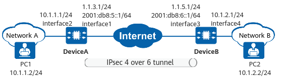

Example for Establishing an IPsec 4over6 Tunnel Between Two Gateways Using Physical Interfaces (IPv4 over IPv6 Encrypted Tunnel)
Networking Requirements
As shown in Figure 1, two IPv4 networks are connected to an IPv6 public network through DeviceA and DeviceB respectively. Security protection is desired for mutual access traffic between the IPv4 networks. The IPv4 networks communicate with each other over the IPv6 public network. An IPsec 4over6 tunnel needs to be established between DeviceA and DeviceB so that users on the IPv4 networks can communicate with each other over the IPsec tunnel.

In this example, interface 1 and interface 2 represent 10GE 0/0/1 and 10GE 0/0/2 on DeviceA, and interface 3 and interface 4 represent 10GE 0/0/1 and 10GE 0/0/2 on DeviceB.

Item |
DeviceA |
DeviceB |
|---|---|---|
Interface configuration |
Interface: 10GE 0/0/1 IPv4 address: 1.1.3.1/120 IPv6 address: 2001:DB8:5::1/64 |
Interface: 10GE 0/0/1 IPv4 address: 1.1.5.1/120 IPv6 address: 2001:DB8:6::1/64 |
Interface: 10GE 0/0/2 IP address: 10.1.1.1/24 |
Interface: 10GE 0/0/2 IP address: 10.1.2.1/24 |
|
IPsec configuration |
Scenario: point-to-point Peer IP address: 2001:DB8:6::1 Authentication type: pre-shared key Local ID type: IP address Remote ID type: IP address |
Scenario: point-to-point Peer IP address: 2001:DB8:5::1 Authentication type: pre-shared key Local ID type: IP address Remote ID type: IP address |
Configuration Roadmap
This example uses default security algorithms of IPsec.
For security purposes, you are advised not to use the weak security algorithm or weak security protocol of this feature. If you must use such a weak security algorithm or protocol, run the install feature-software WEAKEA command to install the weak security algorithm or protocol feature package WEAKEA.
The roadmap for configuring DeviceA is the same as that for configuring DeviceB.
- Complete basic interface configurations.
- Configure routes, including public network routes for communication between DeviceA and DeviceB and private network routes to each other's network.
- Configure IPsec policies, including basic information of IPsec policies, data flows to be encrypted, and proposals.
Procedure
- Configure interfaces on DeviceA.
# Configure the public network interface 10GE 0/0/1.
<HUAWEI> system-view [HUAWEI] sysname DeviceA [DeviceA] interface 10ge 0/0/1 [DeviceA-10GE0/0/1] ip address 1.1.3.1 24 [DeviceA-10GE0/0/1] ipv6 enable [DeviceA-10GE0/0/1] ipv6 address 2001:DB8:5::1 64 [DeviceA-10GE0/0/1] quit
# Configure the private network interface 10GE 0/0/2.
[DeviceA] interface 10ge 0/0/2 [DeviceA-10GE0/0/2] ip address 10.1.1.1 24 [DeviceA-10GE0/0/2] quit
- Configure a static route to network B. In this example, the next-hop address of the static route is 2001:DB8:5::2 and the outbound interface is 10GE 0/0/1.
[DeviceA] ip route-static 10.1.2.0 255.255.255.0 10GE0/0/1 [DeviceA] ipv6 route-static 2001:db8:6::0 64 2001:DB8:5::2
- Configure an IPsec policy and apply it to an interface.
- Configure interfaces on DeviceB.
# Configure the public network interface 10GE 0/0/1.
<HUAWEI> system-view [HUAWEI] sysname DeviceB [DeviceB] interface 10ge 0/0/1 [DeviceB-10GE0/0/1] ip address 1.1.5.1 24 [DeviceB-10GE0/0/1] ipv6 enable [DeviceB-10GE0/0/1] ipv6 address 2001:DB8:6::1 64 [DeviceB-10GE0/0/1] quit
# Configure the private network interface 10GE 0/0/2.
[DeviceB] interface 10ge 0/0/2 [DeviceB-10GE0/0/2] ip address 10.1.2.1 24 [DeviceB-10GE0/0/2] quit
- Configure a static route to network A. In this example, the next-hop address of the static route is 2001:DB8:6::2 and the outbound interface is 10GE 0/0/1.
[DeviceB] ip route-static 10.1.1.0 255.255.255.0 10GE0/0/1 [DeviceB] ipv6 route-static 2001:db8:5::0 64 2001:DB8:6::2
- Configure an IPsec policy and apply it to an interface.
Verifying the Configuration
After the configuration is complete, run the ping command on a device in the protected network segment of network A or network B to trigger IKE negotiation.
If IKE negotiation succeeds, devices in the protected network segments at both ends of the tunnel can ping each other successfully. Otherwise, IKE negotiation fails.
On DeviceA and DeviceB, run the display ike sa and display ipsec sa brief commands to check SA establishment information. The following example uses the command output on DeviceB, which shows that IKE SAs and IPsec SAs have been established successfully.
<DeviceB> display ike sa Total number of IKE SA in all CPU : 2 Total number of phase 1 SA in all CPU : 1 Total number of phase 2 SA in all CPU : 1 Flag Description: RD--READY ST--STAYALIVE RL--REPLACED FD--FADING TO--TIMEOUT HRT--HEARTBEAT LKG--LAST KNOWN GOOD SEQ NO. BCK--BACKED UP M--ACTIVE S--STANDBY A--ALONE NEG--NEGOTIATING Slot 0, cpu 0 IKE SA information : Number of IKE SA : 2, number of IKE SA1: 1, number of IKE SA2: 1 ----------------------------------------------------------------------------- Conn-ID Peer VPN Flag(s) Phase RemoteType RemoteID ----------------------------------------------------------------------------- 16777239 2001:DB8:5::1/500 RD|ST|A v2:2 IP 2001:DB8:5::1 16777232 2001:DB8:5::1/500 RD|ST|A v2:1 IP 2001:DB8:5::1 -------------------------------------------------------------------------------<DeviceB> display ipsec sa brief Slot 0, cpu 0 IPSec SA information: Src address Dst address SPI VPN Protocol Algorithm ------------------------------------------------------------------------------- 2001:DB8:6::1 2001:DB8:5::1 16423687 ESP E:AES-256-GCM-128 2001:DB8:5::1 2001:DB8:6::1 274624861 ESP E:AES-256-GCM-128 Number of IPSec SA : 2 ------------------------------------------------------------------------------- Total number of IPSec SA in all CPU : 2
Configuration Scripts
- DeviceA
# acl ipv6 number 3000 rule 5 permit ip source 10.1.1.0 0.0.0.255 destination 10.1.2.0 0.0.0.255 # ipsec proposal tran1 esp authentication-algorithm sha2-256 esp encryption-algorithm aes-256-gcm-128 # ike proposal 10 encryption-algorithm aes-gcm-256 dh group14 authentication-method pre-share integrity-algorithm hmac-sha2-256 prf hmac-sha2-256 # ike peer b pre-shared-key %+%#ljD3B%+u|Ci%<,Tk7FE*xzPWG:Y`$O1(oZVea8/S%+%# ike-proposal 10 remote-id-type ip remote-address 2001:DB8:6::1 # ipsec policy map1 10 isakmp security acl 3000 ike-peer a proposal tran1 # interface 10GE0/0/1 ipv6 enable ip address 1.1.3.1 255.255.255.0 ipv6 address 2001:DB8:5::1/64 ipsec policy map1 # interface 10GE0/0/2 ip address 10.1.1.1 255.255.255.0 # ip route-static 10.1.2.0 255.255.255.0 10GE0/0/1 # ipv6 route-static 2001:DB8:6::0 64 2001:DB8:5::2 # return
- DeviceB
# acl number 3000 rule 5 permit ip source 10.1.2.0 0.0.0.255 destination 10.1.1.0 0.0.0.255 # ipsec proposal tran1 esp authentication-algorithm sha2-256 esp encryption-algorithm aes-256-gcm-128 # ike proposal 10 encryption-algorithm aes-gcm-256 dh group14 authentication-method pre-share integrity-algorithm hmac-sha2-256 prf hmac-sha2-256 # ike peer a pre-shared-key %+%#ljD3B%+u|Ci%<,Tk7FE*xzPWG:Y`$O1(oZVea8/S%+%# ike-proposal 1 remote-id-type ip remote-address 2001:DB8:5::1 # ipsec policy map1 10 isakmp security acl 3000 ike-peer a proposal tran1 # interface 10GE0/0/1 ipv6 enable ip address 1.1.5.1 255.255.255.0 ipv6 address 2001:DB8:6::1/64 ipsec policy map1 # interface 10GE0/0/2 ip address 10.1.2.1 255.255.255.0 # ip route-static 10.1.1.0 255.255.255.0 10GE0/0/1 # ipv6 route-static 2001:DB8:5::0 64 2001:DB8:6::2 # return